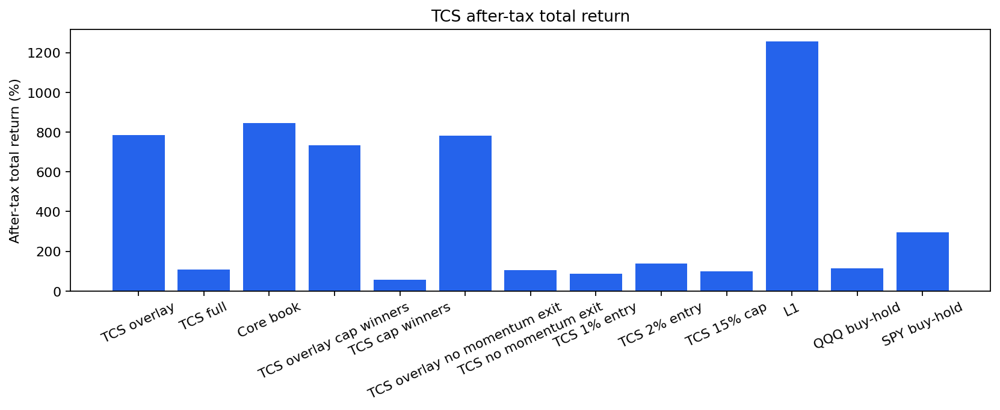
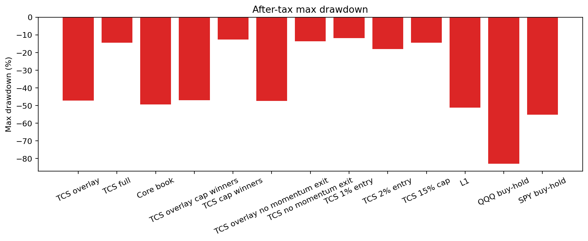
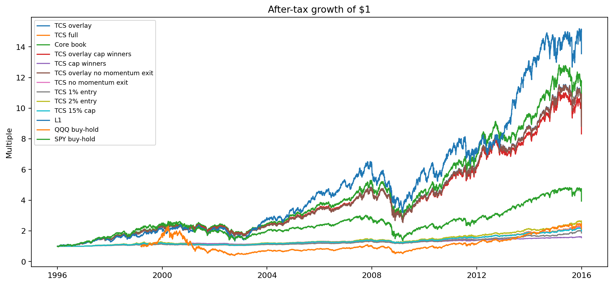
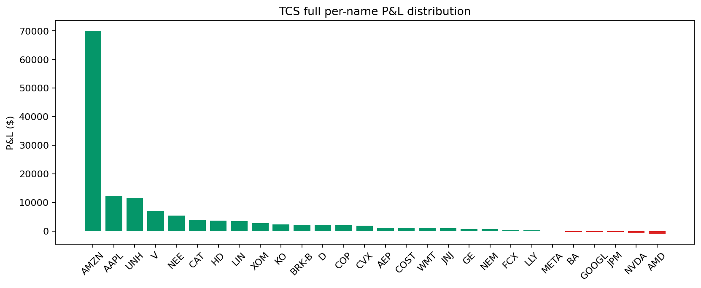

Generated 2026-06-14T09:10:22.750670+00:00 at git SHA 56351e9. Window: 1996-01-01 to 2015-12-31. OOS starts 2014-01-01.
| Arm | Strategy Used | Tax / Exit Rule |
|---|---|---|
| TCS overlay | 80% CCEL core plus TCS sleeve component; idle cash from the sleeve-only run is replaced by core. | Primary portfolio-shape test. |
| TCS full | Static-theme convexity sleeve with small tranches and winner graduation. | Sleeve-only diagnostic account; not the primary terminal-wealth comparison. |
| Core book | CCEL let-winners-run core book with no sleeve. | FIFO after-tax benchmark. |
| TCS overlay cap winners | 80% core plus capped-winner TCS sensitivity. | Tests overlay effect of removing winner drift. |
| TCS cap winners | TCS sensitivity where winners are capped instead of allowed to run. | Tests whether convexity depends on no-trim winner drift. |
| TCS overlay no momentum exit | 80% core plus TCS without momentum-decay loss relegation. | Tests overlay effect of the loss-relegation rule. |
| TCS no momentum exit | TCS sensitivity without momentum-decay loss relegation. | Tests exit-rule contribution. |
| TCS 1% entry | TCS sensitivity with 1% entry tranches. | Research-only locked-field sensitivity. |
| TCS 2% entry | TCS sensitivity with 2% entry tranches. | Research-only locked-field sensitivity. |
| TCS 15% cap | TCS sensitivity with 15% hard cap. | Research-only locked-field sensitivity. |
| L1 | Campaign 2 L1 portfolio strategy. | After-tax reference. |
| QQQ buy-hold | QQQ buy-and-hold. | Passive index after-tax reference. |
| SPY buy-hold | SPY buy-and-hold. | Passive index after-tax reference. |
| Arm | Terminal Wealth | Total Return | CAGR | Vol | Sharpe | Sortino | Max DD | Calmar | Ulcer | Turnover | Costs | Trades |
|---|---|---|---|---|---|---|---|---|---|---|---|---|
| TCS overlay | $892,135 | 784.97% | 11.53% | 18.74% | 0.677 | 0.869 | -47.24% | 0.244 | 11.29% | 24.36% | $243 | 291 |
| TCS full | $208,987 | 108.99% | 3.76% | 6.37% | 0.611 | 0.728 | -14.51% | 0.259 | 5.31% | 20.36% | $203 | 269 |
| Core book | $953,935 | 844.37% | 11.89% | 19.87% | 0.666 | 0.859 | -49.50% | 0.240 | 11.73% | 5.00% | $50 | 22 |
| TCS overlay cap winners | $839,244 | 732.50% | 11.19% | 18.28% | 0.672 | 0.862 | -47.05% | 0.238 | 10.88% | 24.27% | $243 | 314 |
| TCS cap winners | $156,096 | 56.10% | 2.25% | 3.87% | 0.595 | 0.730 | -12.65% | 0.178 | 3.78% | 20.27% | $203 | 292 |
| TCS overlay no momentum exit | $888,647 | 781.51% | 11.51% | 18.83% | 0.674 | 0.865 | -47.35% | 0.243 | 11.30% | 21.06% | $210 | 257 |
| TCS no momentum exit | $205,499 | 105.50% | 3.67% | 6.39% | 0.597 | 0.712 | -13.62% | 0.269 | 5.15% | 17.06% | $170 | 235 |
| TCS 1% entry | $186,396 | 86.40% | 3.17% | 5.04% | 0.643 | 0.736 | -11.86% | 0.267 | 3.82% | 15.28% | $153 | 252 |
| TCS 2% entry | $236,804 | 136.80% | 4.41% | 7.39% | 0.621 | 0.754 | -18.06% | 0.244 | 6.92% | 24.70% | $247 | 271 |
| TCS 15% cap | $200,013 | 100.01% | 3.53% | 6.00% | 0.609 | 0.741 | -14.51% | 0.243 | 5.29% | 20.32% | $203 | 291 |
| L1 | $1,355,247 | 1255.25% | 13.93% | 21.82% | 0.708 | 0.914 | -51.11% | 0.273 | 13.38% | 189.66% | $10,691 | 13347 |
| QQQ buy-hold | $212,626 | 112.99% | 4.61% | 29.64% | 0.300 | 0.402 | -82.96% | 0.056 | 54.81% | 5.95% | $50 | 1 |
| SPY buy-hold | $398,699 | 294.19% | 7.11% | 20.25% | 0.441 | 0.563 | -55.19% | 0.129 | 17.96% | 5.00% | $50 | 1 |
| Arm | Skew | Median Return | Top 20% Positive P&L Share | Right-skew OK |
|---|---|---|---|---|
| TCS overlay | 5.235 | 28.84% | 76.75% | no |
| TCS full | 5.235 | 28.84% | 76.75% | no |
| TCS overlay cap winners | 1.088 | 16.74% | 62.84% | no |
| TCS cap winners | 1.088 | 16.74% | 62.84% | no |
| TCS overlay no momentum exit | 5.145 | 26.17% | 75.44% | no |
| TCS no momentum exit | 5.145 | 26.17% | 75.44% | no |
| TCS 1% entry | 5.180 | 42.79% | 66.69% | no |
| TCS 2% entry | 5.330 | 13.00% | 82.13% | no |
| TCS 15% cap | 5.118 | 30.00% | 74.54% | no |
| Comparison | Terminal Wealth Delta | CAGR Delta | Ulcer Delta | Interpretation |
|---|---|---|---|---|
| Overlay vs core-only | $-61,800 | -0.36% | -0.44% | Measures whether the TCS sleeve adds value over the let-winners-run core. |
| Overlay winners run ON vs OFF | $52,891 | 0.34% | 0.41% | Positive delta means convexity comes from letting winners run. |
| Overlay momentum decay ON vs OFF | $3,488 | 0.02% | -0.01% | Positive delta means loss-relegation helps. |
| Entry 1.5% vs 1.0% | $705,740 | 8.36% | 7.48% | Entry-size sensitivity. |
| Entry 1.5% vs 2.0% | $655,331 | 7.12% | 4.38% | Entry-size sensitivity. |
| Cap 20% vs 15% | $692,123 | 8.00% | 6.00% | Hard-cap sensitivity. |
| Year | TCS overlay | TCS full | Core book | TCS overlay cap winners | TCS cap winners | TCS overlay no momentum exit | TCS no momentum exit | TCS 1% entry | TCS 2% entry | TCS 15% cap | L1 | QQQ buy-hold | SPY buy-hold |
|---|---|---|---|---|---|---|---|---|---|---|---|---|---|
| 1996-12-31 | 16.31% | 0.00% | 20.34% | 16.31% | 0.00% | 16.31% | 0.00% | 0.00% | 0.00% | 0.00% | 19.52% | 21.20% | |
| 1997-12-31 | 26.53% | 7.32% | 24.46% | 26.53% | 7.32% | 26.49% | 7.27% | 4.86% | 8.68% | 7.32% | 19.91% | 33.47% | |
| 1998-12-31 | 28.11% | 6.98% | 28.26% | 28.11% | 6.98% | 28.04% | 6.88% | 4.67% | 8.96% | 6.98% | 25.20% | 28.69% | |
| 1999-12-31 | 23.60% | 4.94% | 25.24% | 23.44% | 4.68% | 23.41% | 4.60% | 3.35% | 5.87% | 4.94% | 23.02% | 78.93% | 20.39% |
| 2000-12-31 | -5.82% | -5.75% | -3.47% | -2.62% | 0.51% | -5.99% | -6.07% | -3.27% | -8.12% | -5.75% | 0.52% | -36.11% | -9.74% |
| 2001-12-31 | -0.50% | -3.19% | 1.34% | -0.40% | -2.85% | 0.32% | -1.62% | -1.96% | -3.82% | -3.19% | -0.18% | -33.34% | -11.76% |
| 2002-12-31 | -19.30% | -2.86% | -20.69% | -19.17% | -3.65% | -19.23% | -2.85% | -2.08% | -1.77% | -2.86% | -26.06% | -37.36% | -21.58% |
| 2003-12-31 | 34.92% | 11.40% | 33.05% | 30.69% | 5.82% | 33.19% | 8.73% | 6.12% | 12.37% | 11.40% | 74.39% | 49.64% | 28.18% |
| 2004-12-31 | 20.49% | 2.68% | 22.88% | 20.98% | 3.78% | 20.54% | 2.49% | 2.40% | 1.51% | 2.68% | 21.59% | 10.53% | 10.70% |
| 2005-12-31 | 19.49% | 5.30% | 20.19% | 19.35% | 5.22% | 19.18% | 4.31% | 4.09% | 5.30% | 5.30% | 29.57% | 1.56% | 4.83% |
| 2006-12-31 | 8.87% | 0.18% | 10.24% | 9.18% | 1.14% | 9.45% | 1.54% | 2.10% | 0.48% | 0.18% | 15.81% | 7.14% | 15.84% |
| 2007-12-31 | 28.62% | 9.37% | 29.21% | 26.91% | 4.94% | 28.52% | 8.78% | 8.95% | 12.02% | 9.37% | 21.96% | 19.02% | 5.15% |
| 2008-12-31 | -33.99% | -10.52% | -35.39% | -33.45% | -8.24% | -33.93% | -9.86% | -9.29% | -13.19% | -10.52% | -34.49% | -41.72% | -36.79% |
| 2009-12-31 | 35.26% | 10.90% | 36.17% | 31.87% | 2.60% | 35.26% | 10.61% | 9.79% | 14.68% | 10.90% | 44.57% | 54.66% | 26.35% |
| 2010-12-31 | 27.91% | 7.64% | 29.53% | 27.01% | 3.27% | 27.92% | 7.37% | 6.30% | 8.68% | 7.64% | 21.70% | 20.14% | 15.05% |
| 2011-12-31 | 13.71% | 1.81% | 15.16% | 14.22% | 2.42% | 14.04% | 2.81% | 0.54% | 3.18% | 2.51% | 0.37% | 3.47% | 1.89% |
| 2012-12-31 | 19.07% | 9.69% | 18.91% | 18.28% | 5.17% | 19.04% | 9.51% | 7.63% | 11.31% | 8.04% | 11.43% | 18.11% | 15.99% |
| 2013-12-31 | 19.91% | 16.29% | 18.42% | 17.61% | 4.25% | 19.78% | 15.65% | 12.58% | 17.73% | 13.96% | 59.75% | 36.63% | 32.31% |
| 2014-12-31 | 18.78% | 0.65% | 21.40% | 20.18% | 3.24% | 18.73% | 0.15% | -0.25% | 2.22% | 1.83% | 9.92% | 19.18% | 13.46% |
| 2015-12-31 | -16.16% | 6.22% | -19.44% | -18.01% | -0.13% | -16.19% | 6.50% | 9.31% | 7.63% | 3.38% | -5.78% | -3.36% | -14.74% |




| Ticker | Theme | Deployed | Realized | Open | P&L | Total Return |
|---|---|---|---|---|---|---|
| AMZN | digital_platforms | $1,627 | $24,322 | $45,683 | $70,005 | 4302.22% |
| AAPL | ai_compute | $4,059 | $-95 | $12,558 | $12,463 | 307.06% |
| UNH | compounder_health_finance | $7,853 | $7,124 | $4,584 | $11,707 | 149.08% |
| V | compounder_health_finance | $4,355 | $473 | $6,686 | $7,159 | 164.38% |
| NEE | industrial_electrification | $8,993 | $1,877 | $3,671 | $5,548 | 61.69% |
| CAT | industrial_electrification | $11,932 | $3,980 | $0 | $3,980 | 33.35% |
| HD | consumer_scale | $8,704 | $2,899 | $895 | $3,794 | 43.59% |
| LIN | industrial_electrification | $13,154 | $3,288 | $351 | $3,640 | 27.67% |
| XOM | energy_resilience | $7,648 | $2,855 | $0 | $2,855 | 37.32% |
| KO | consumer_scale | $5,863 | $-274 | $2,654 | $2,380 | 40.60% |
| BRK-B | compounder_health_finance | $6,093 | $-334 | $2,571 | $2,238 | 36.72% |
| D | energy_resilience | $6,945 | $675 | $1,530 | $2,205 | 31.75% |
| COP | energy_resilience | $5,061 | $2,164 | $0 | $2,164 | 42.75% |
| CVX | energy_resilience | $5,405 | $1,988 | $0 | $1,988 | 36.78% |
| AEP | energy_resilience | $4,194 | $-421 | $1,679 | $1,258 | 30.00% |
| COST | consumer_scale | $9,481 | $1,195 | $0 | $1,195 | 12.60% |
| WMT | consumer_scale | $9,475 | $1,172 | $0 | $1,172 | 12.37% |
| JNJ | compounder_health_finance | $5,661 | $896 | $253 | $1,149 | 20.30% |
| GE | industrial_electrification | $5,301 | $759 | $0 | $759 | 14.31% |
| NEM | energy_resilience | $9,412 | $754 | $0 | $754 | 8.01% |
| FCX | industrial_electrification | $9,284 | $518 | $0 | $518 | 5.58% |
| LLY | compounder_health_finance | $6,809 | $325 | $0 | $325 | 4.77% |
| META | ai_compute | $718 | $0 | $9 | $9 | 1.26% |
| BA | industrial_electrification | $6,857 | $-245 | $0 | $-245 | -3.58% |
| GOOGL | ai_compute | $5,107 | $-283 | $0 | $-283 | -5.53% |
| JPM | compounder_health_finance | $8,009 | $-284 | $0 | $-284 | -3.55% |
| NVDA | ai_compute | $7,555 | $-1,256 | $536 | $-720 | -9.53% |
| AMD | ai_compute | $3,905 | $-1,021 | $0 | $-1,021 | -26.13% |
Adjusted daily OHLC is used where available; this is a static-theme, survivorship-biased proxy.
| Ticker | Sector | First Date | Last Date | Rows | Starts Late |
|---|---|---|---|---|---|
| AAPL | Information Technology | 1996-01-02 | 2015-12-31 | 5036 | no |
| AEP | Utilities | 1996-01-02 | 2015-12-31 | 5036 | no |
| AMD | Information Technology | 1996-01-02 | 2015-12-31 | 5036 | no |
| AMZN | Consumer Discretionary | 1997-05-15 | 2015-12-31 | 4689 | no |
| BA | Industrials | 1996-01-02 | 2015-12-31 | 5036 | no |
| BRK-B | Financials | 1996-05-09 | 2015-12-31 | 4946 | no |
| CAT | Industrials | 1996-01-02 | 2015-12-31 | 5036 | no |
| COP | Energy | 1996-01-02 | 2015-12-31 | 5036 | no |
| COST | Consumer Staples | 1996-01-02 | 2015-12-31 | 5036 | no |
| CVX | Energy | 1996-01-02 | 2015-12-31 | 5036 | no |
| D | Utilities | 1996-01-02 | 2015-12-31 | 5036 | no |
| FCX | Materials | 1996-01-02 | 2015-12-31 | 5036 | no |
| GE | Industrials | 1996-01-02 | 2015-12-31 | 5036 | no |
| GOOGL | Communication Services | 2004-08-19 | 2015-12-31 | 2863 | no |
| HD | Consumer Discretionary | 1996-01-02 | 2015-12-31 | 5036 | no |
| JNJ | Health Care | 1996-01-02 | 2015-12-31 | 5036 | no |
| JPM | Financials | 1996-01-02 | 2015-12-31 | 5036 | no |
| KO | Consumer Staples | 1996-01-02 | 2015-12-31 | 5036 | no |
| LIN | Materials | 1996-01-02 | 2015-12-31 | 5036 | no |
| LLY | Health Care | 1996-01-02 | 2015-12-31 | 5036 | no |
| META | Communication Services | 2012-05-18 | 2015-12-31 | 911 | no |
| NEE | Utilities | 1996-01-02 | 2015-12-31 | 5036 | no |
| NEM | Materials | 1996-01-02 | 2015-12-31 | 5036 | no |
| NFLX | Communication Services | 2002-05-23 | 2015-12-31 | 3427 | no |
| NVDA | Information Technology | 1999-01-22 | 2015-12-31 | 4264 | no |
| TSLA | Consumer Discretionary | 2010-06-29 | 2015-12-31 | 1388 | no |
| UNH | Health Care | 1996-01-02 | 2015-12-31 | 5036 | no |
| V | Financials | 2008-03-19 | 2015-12-31 | 1962 | no |
| WMT | Consumer Staples | 1996-01-02 | 2015-12-31 | 5036 | no |
| XOM | Energy | 1996-01-02 | 2015-12-31 | 5036 | no |
python -m src.regime.cli thematic-sleeve-campaign run --start 1996-01-01 --end 2015-12-31 --oos-start 2014-01-01 --campaign-dir data/campaign/thematic_sleeve_v1_1996_2015 --report-dir output/thematic_sleeve_v1_1996_2015_report --resume